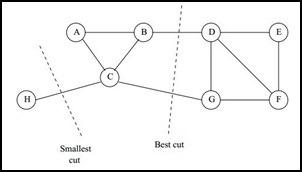

聚类算法之谱聚类¶
谱聚类(Spectral Clustering)是广泛应用的聚类算法，比起传统的K-Means算法，谱聚类对数据分布的适应性强，聚类效果也很好且聚类的计算量小很多。在处理实际问题时，谱聚类可以作为首先考虑的算法之一。
谱聚类是从图论中演化过来的，主要思想是把所有的数据看做空间中点，这些点之间可以用边连接起来。距离较远的两个点之间的边权重值较低，而距离较近的两个点之间的边权重较高。通过对所有数据点组成的图进行切图，让切图后不同的子图间边权重尽可能的低，而子图的边权重和尽可能的高，从而达到聚类的目的。
谱聚类基础之一：无向权重图¶
对于一个图G，一般用点集合V和边集合E来描述，记作G(V,E)。其中V包含了数据集中所有的点(v_1,v_2,...,v_n)，对于V中任意两个点，可以有边连接，也可以没有边连接，定义点v_i和v_j之间的权重为w_{ij}。
对于有边连接的两个点v_i和v_j，权重w_{ij}>0；对于没有边连接的两个点v_i和v_j，权重w_{ij}=0。
利用所有点之间的权重图，可以得到一个图的邻接矩阵W，是一个n\times n的矩阵，第i行的第j个值对应了权重w_{ij} $$ W=\left( \begin{matrix} w_{11} & w_{12} &...&w_{1n} \ w_{21} & w_{22} &...&w_{2n} \ \vdots &\vdots &\vdots&\vdots \ w_{n1} & w_{n2} &...&w_{nn} \ \end{matrix} \right)\notag $$ 对于图中的任意一个点v_i，它的度d_i定义为所有和它相连的边权重之和，即 $$ d_i=\sum_{j=1}^n w_{ij} $$ 利用每个点度的定义，可以得到一个n\times n的对角矩阵D，只有对角线有值，对应第i行的第i个点度数，即 $$ D=\left( \begin{matrix} d_1 &0 &...&0 \ 0 &d_2 &...&0 \ \vdots &\vdots &\vdots&\vdots \ 0 & 0 &...&d_n \ \end{matrix} \right)\notag $$ 此外还有两个符号定义：|A|表示集合A中点的个数，vol(A):=\sum_\limits{i\in A} d_i表示集合A中所有点的度之和。
谱聚类基础之二：相似矩阵¶
邻接矩阵W由任意两点之间的权重值w_{ij}组成。而w_{ij}的取值一般满足距离较远的两个点之间的边权重较低，距离较近的两个点之间的边权重较高。通常构建邻接矩阵的W的方法有三类：\epsilon-近邻法、k近邻法和全连接法。
\epsilon-近邻法
首先利用欧式距离s_{ij}度量任意两个点x_i和x_j的距离，设置一个距离阈值\epsilon，然后根据s_{ij}和\epsilon的大小关系定义邻接矩阵W如下： $$ W_{ij}= \left{ \begin{array}{} 0 \qquad s_{ij}\gt \epsilon \ \epsilon \qquad s_{ij}\le \epsilon \end{array}
\right. $$ 从式(2)可以看出两点之间的权重不是\epsilon就是0，没有其他的信息了。距离远近的度量不是很精确，因此使用较少。
k近邻法
利用KNN算法遍历所有的样本点，取每个样本最近的k个点作为近邻，只有和样本距离最近的k个点之间的w_{ij}\gt 0但是这样的方法会导致邻接矩阵W非对称。为了解决这个问题，通常采用下面两种方法之一：
第一种k近邻是只要一点在另一点的k近邻中，则保留s_{ij} $$ W_{ij}=W_{ji}=\left{ \begin{matrix} 0 & x^{(i)}\notin KNN(x^{(j)}) \; and \; x^{(j)}\notin KNN(x^{(i)}) \ \exp(-\frac{||x{(i)}-x{(j)}||2}{2\sigma2}) & x^{(i)}\in KNN(x^{(j)}) \; or \; x^{(j)}\in KNN(x^{(i)}) \end{matrix} \right. $$ 第二种k近邻是必须两点互为k近邻，才能保留s_{ij} $$ W_{ij}=W_{ji}=\left{ \begin{matrix} 0 & x^{(i)}\notin KNN(x^{(j)}) \; or \; x^{(j)}\notin KNN(x^{(i)}) \ \exp(-\frac{||x{(i)}-x{(j)}||2}{2\sigma2}) & x^{(i)}\in KNN(x^{(j)}) \; and \; x^{(j)}\in KNN(x^{(i)}) \end{matrix} \right. $$
全连接
全连接的方法中所有的点之间的权重都大于0，可以选择不同的核函数来定义边权重，常用的有多项式核函数，高斯核函数和Sigmoid核函数。常用的是高斯核函数RBF： $$ W_{ij}=\exp(-\frac{||x{(i)}-x{(j)}||_22}{2\sigma2}) $$ 在实际应用中，使用全连接的方法来建立邻接矩阵最普遍。
谱聚类基础之三：拉普拉斯矩阵¶
定义拉普拉斯矩阵L=D-W，其中D为度矩阵，是一个对角矩阵，W是邻接矩阵。
拉普拉斯矩阵具有的性质：
（1）拉普拉斯矩阵是对称的，因为W和D都是对称矩阵；
（2）由于拉普拉斯矩阵是对称矩阵，则它所有特征值都是实数；
（3）对于任意向量f，都有 $$ \begin{align} f^T L f &=f^T(D-W)f\ &=f^T Df -f^TWf\ &=\sum_{i=1}^n d_i f_i2-\sum_{i=1,j=1}nw_{ij}f_if_j\ &=\frac{1}{2}(\sum_{i=1}^n d_i f_i2-2\sum_{i=1,j=1}nw_{ij}f_if_j+\sum_{j=1}^n d_j f_j^2)\ &=\frac{1}{2}\sum_{i=1,j=1}^n w_{ij}(f_i-f_j)^2 \end{align} $$ （4）拉普拉斯矩阵是正定的，且对应的n个实数特征值都大于等于0，即0=\lambda_1\le\lambda_2\le...\le\lambda_n，且最小的特征值为0
谱聚类基础之四：无向图切图¶
对于无向图G(V,E)，切分为互相没有连接的k个子图，每个子图的集合为A_1,A_2,...,A_k，满足A_i\cap A_j=\empty，且A_1\cup A_2\cup...\cup A_k=V。
对于任意两个子图点的集合A,B\in V,A\cap B=\empty，于是定义A和B之间的切图权重为： $$ W(A,B)=\sum_{i\in A,j\in B}w_{ij} $$ 对于k个子图点的集合：A_1,A_2,...,A_k，定义切图cut为： $$ cut(A_1,A_2,...,A_k)=\frac{1}{2}\sum_{i=1}^k W(A_i,\bar{A}_i) $$ 其中\bar{A}_i为A_i的补集。
由于切图的目的是使得每个子图内部结构相似，这个相似表现为连边的权重平均都较大，且互相连接，而每个子图间则尽量没有边相连，或者连边的权重很低，所以优化目标可以表述为： $$ \min cut(A_1,A_2,...,A_k)=\min\frac{1}{2}\sum_{i=1}^k W(A_i,\bar{A}_i) $$ 但是很容易发现这种极小化的切图存在问题，如下图

为了最小化cut(A_1,A_2,...,A_k)，需要选择C和H之间进行cut，但是却不是最优的切图。
谱聚类之切图聚类¶
为了避免最小切图导致的切图效果不佳，需要对每个子图的规模做出限制。一般来说，有两种切图方式，风别是RatioCut和Ncut。
RatioCut切图¶
对每个切图，不仅考虑最小化cut(A_1,A_2,...,A_k)，同时还要考虑最大化每个子图的个数即： $$ RatioCut(A_1,A_2,...,A_k)=\frac{1}{2}\sum_{i=1}^k \frac{W(A_i,\bar{A}i)}{|A_i|} $$ 为了最小化这个RationCut(\cdot)函数，引入指示向量\{h_1,h_2,...,h_j,...,h_k\},j=1,2,...,k，对于任意向量h_j\in \mathbb{R}^n，这里n是样本数 $$ h{ji}=\left{ \begin{aligned} &0 & v_i \notin A_j\ &\frac{1}{\sqrt{|A_j|}}& v_i \in A_j \end{aligned} \right. $$ 现在考虑h_i^T L h_i有： $$ \begin{align} h_i^T L h_i &=\frac{1}{2}\sum_{m=1}\sum_{n=1}w_{mn}(h_{im}-h_{in})^2\ &=\frac{1}{2}(\sum_{m\in A_i,n\notin A_i}w_{mn}(\frac{1}{\sqrt{|A_{i}|}}-0)^2 +\sum_{m\notin A_i,n\in A_i}w_{mn}(0-\frac{1}{\sqrt{|A_{i}|}})^2)\ &=\frac{1}{2}(\sum_{m\in A_i,n\notin A_i}w_{mn}\frac{1}{|A_i|} + \sum_{m\notin A_i,n\in A_i}w_{mn}\frac{1}{|A_i|})\ &=\frac{1}{2}(cut(A_i,\bar{A}_i)\frac{1}{|A_i|}+cut(\bar{A}_i,A_i)\frac{1}{|A_i|})\ &=\frac{cut(A_i,\bar{A}_i)}{|A_i|}\ &=RationCut(A_i,\bar{A}_i) \end{align} $$ 公式(15)利用了拉普拉斯矩阵的性质；
公式(15)~(17)主要利用m,n是否属于A_i有四中情况：
①m\in A_i \; n\in A_i 这时候h_{im}=h_{in}=\frac{1}{\sqrt{|A_j|}}
②m\notin A_i \; n\in A_i 这时候h_{im}=0\quad h_{in}=\frac{1}{\sqrt{|A_j|}}
③m\in A_i \; n\notin A_i 这时候h_{im}=\frac{1}{\sqrt{|A_j|}} \quad h_{in}=0
④m\notin A_i \; n\notin A_i 这时候h_{im}= h_{in}=0
公式(17)~(19)利用cut(\cdot)的定义，且cut(A_i,\bar{A}_i)=cut(\bar{A}_i,A_i)。
所以最终式(14)可以等价于： $$ RatioCut(A_1,A_2,...,A_k)=\sum_{i=1}^k h_i^T L h_i = \sum_{i=1}k(HTL H){ii}=tr(H^TLH) $$ 其中tr(H^TLH)为矩阵的迹。优化目标可以写成： $$ \arg \min{H} tr(H^T L H) \quad s.t. \quad H^TH=I $$ 由于H矩阵里面的每一个指示向量都是n维的，向量中每个变量的取值为0或者\frac{1}{\sqrt{|A_j|}}，就有2^n中取值，有k个子图就有k个指示向量，共计k2^n中可能取值的H。这是一个NP难的问题。
但是观察发现tr(H^TLH)中的每一个优化子目标h_i^T L h_i，其中h是单位正交基，L是对称矩阵，此时h_i^T L h_i的最大值为L的最大特征值，最小值是L的最小特征值。
对于h_i^T L h_i，目标是找到最小的L的特征值，而tr(HTLH)=\sum_{i=1}k h_i^T L h_i 的优化目标就是找到kkkk个最小的特征值，一般而言k是远远小于n，从而近似解决了这个NP难的问题。
通过找到L的最小k个特征值，可以得到对应的k个特征向量，这k个特征向量组成一个n\times k的矩阵，即H。一般需要对H矩阵按行做标准化，即 $$ h_{ij}*=\frac{h_{ij}}{\sqrt{\sum_{t=1}k h_{it}^2}} $$ 由于在使用维度规约的时候损失了少量信息，得到的优化后指示向量h对应的H现在不能完全指示各样本所属类别，因此一般在得到n\times k维度的矩阵H后还需要对每一行进行依次传统的聚类，如K-Means聚类等。
NCut切图¶
NCut切图和RatioCut切图类似，只是将RatioCut中分母|A_i|换成了vol(A_i)。由于子图样本的个数多并不一定权重就大，所以基于权重的切图更加符合目标。因此一般而言NCut切图是优于RatioCut切图的。 $$ NCut(A_1,A_2,...,A_k)=\frac{1}{2}\sum_{i=1}^k\frac{W(A_i,\bar{A}i)}{vol(A_i)} $$ NCut切图对指示向量h做了改进，定义如下： $$ h{ji}=\left{ \begin{aligned} &0 & v_i \notin A_j\ &\frac{1}{\sqrt{vol(A_j)}}& v_i \in A_j \end{aligned} \right. $$ 对于h_i^T L h_i有： $$ \begin{align} h_i^T L h_i &=\frac{1}{2}\sum_{m=1}\sum_{n=1}w_{mn}(h_{im}-h_{in})^2\ &=\frac{1}{2}(\sum_{m\in A_i,n\notin A_i}w_{mn}(\frac{1}{\sqrt{vol(A_{i})}}-0)^2 +\sum_{m\notin A_i,n\in A_i}w_{mn}(0-\frac{1}{\sqrt{vol(A_{i})}})^2)\ &=\frac{1}{2}(\sum_{m\in A_i,n\notin A_i}w_{mn}\frac{1}{vol(A_{i})} + \sum_{m\notin A_i,n\in A_i}w_{mn}\frac{1}{vol(A_{i})})\ &=\frac{1}{2}(cut(A_i,\bar{A}i)\frac{1}{vol(A{i})}+cut(\bar{A}i,A_i)\frac{1}{vol(A{i})})\ &=\frac{cut(A_i,\bar{A}i)}{vol(A{i})}\ &=RationCut(A_i,\bar{A}i) \end{align} $$ 推导方式和RatioCut完全一致，优化目标为： $$ NCut(A_1,A_2,...A_k) = \sum\limits{i=1}{k}h_iTLh_i = \sum\limits_{i=1}{k}(HTLH){ii} = tr(H^TLH) $$ 此时H^TH\ne I，但是H^TDH=I，推导如下： $$ h_i^TDh_i = \sum\limits{j=1}{n}h_{ij}2d_j =\frac{1}{vol(A_i)}\sum\limits_{v_j \in A_i}w_{v_j} = \frac{1}{vol(A_i)}vol(A_i) =1 $$ 最终的优化目标为： $$ \arg \min_{H} tr(H^T L H) \quad s.t. \quad H^TDH=I $$ 此时H中的指示向量h并不是标准正交基，所以需要将H进行小小的转化，令H=D^{-1/2}F，则式(33)转化为： $$ \arg \min_{F} tr(F^T D{-½}LD{-½}F) \quad s.t. \quad F^TF=I $$ 式(34)和RatioCut基本一致了，只是中间的L变成了D^{-1/2}LD^{-1/2}，可以求出D^{-1/2}LD^{-1/2}的最小的前k个特征值，然后求出对应的特征向量，并标准化，得到最后的特征矩阵F，最后对F进行一次传统的聚类即可。
谱聚类总结¶
谱聚类算法的主要优点有：
（1）谱聚类只需要数据之间的相似度矩阵，因此对于处理稀疏数据的聚类很有效。
（2）由于使用了降维，因此在处理高维数据聚类时的复杂度比传统聚类算法好。
谱聚类算法的主要缺点有：
（1）如果最终聚类的维度非常高，则由于降维的幅度不够，谱聚类的运行速度和最后的聚类效果均不好。
（2）聚类效果依赖于相似矩阵，不同的相似矩阵得到的最终聚类效果可能很不同。